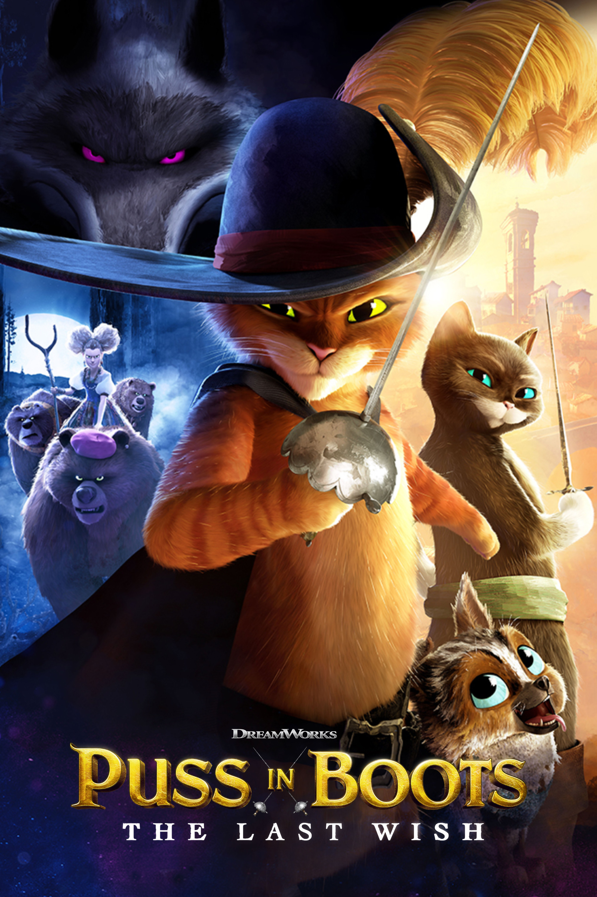

This movie from DreamWorks Animation. I'm considering it to be one of my favorite movies. Think about it. We get to see Death, who's a wolf, as well as Goldilocks and the Three Little Bears. To be honest, wolves and bears are one of my favorite animals so it's no problem at all.
This image belongs to The Movie Database (TMDB) and is copyrighted under CC BY-NC-SA 2.0. To find the image head to https://www.themoviedb.org/movie/315162-puss-in-boots-the-last-wish/images/posters.